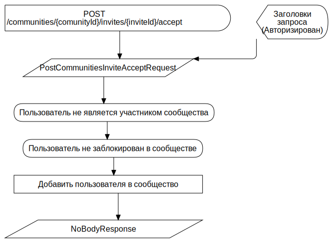

Присоединение к закрытому сообществу по приглашению F
FCFlowchart
TAction
::
Use Cases
::
Diagrams
::
PUC: Сообщество
::
Присоединение к закрытому сообществу по приглашению
::
Присоединение к закрытому сообществу по приглашению F
Description
none
Diagrams

Присоединение к закрытому сообществу по приглашению FD
Properties
Name
Value
name
Присоединение к закрытому сообществу по приглашению F
Owned Elements
Присоединение к закрытому сообществу по приглашению FD
POST /communities/{comunityId}/invites/{inviteId}/accept
PostCommunitiesInviteAcceptRequest
Добавить пользователя в сообщество
NoBodyResponse